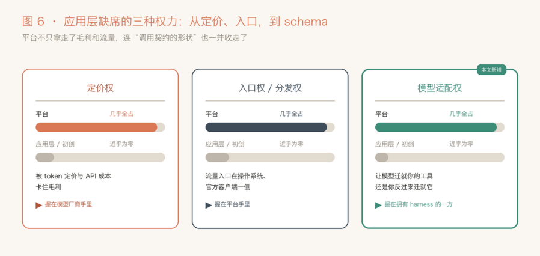

最强的模型，最基础的错
地表最强的大模型 Opus 4.8，最近栽在了一个很基础的错误上。
背景来自 Pi Agent（支持 OpenClaw 的内核），Pi Agent coding 时，一次能改好几处代码，可经常 Opus 会在这一对的末尾，多长一个谁也没定义过的字段。
最反常的是，旧代码、新代码它写得一个字都不差，就末尾这一下出岔子。而且你换段对话再让它写，它多出来的字段名还不一样，这次叫 requireUnique，下次叫 in_file、oldText2，像是临时编的。

图 1 模型亲手交出来的调用。正文一字不差，末尾却凭空多了一个字段；下面那排，是换了对话后它编过的其它名字。
删掉历史里的思考过程，失败率降一半；打开 strict 模式，现象就消失了。
工具调用，说白了就是一段文本
想弄懂它为什么出岔子，得先理解 Tool Call。
大家以为的模型调用工具，是像程序员那样规规矩矩填一个函数参数？其实不是。底层就是一段文本。
系统提示、聊天记录、工具定义，全被拼成一个大 prompt，模型照着训练时见过的样子，一个 token 一个 token 往外写，写到某段被 API 认成“这是在调工具”。
<invoke name="edit"> |
注意一个细节：path 这种顶层字符串，直接贴在标签里，成本很低；而 edits 这种对象数组，得在标签里现写一段带转义的 JSON，还可能夹着多行代码。看着人畜无害，其实是事故高发的地方。
图 2 一个意图被序列化成带标记的文本。path 直接内联，edits 却得在标签里现写一段转义 JSON，是事故高发的地方。
产出这种结构有两条路：
一条是放养，写完再拿 schema 校验，不合格就打回重写；常见 ai 应用都会这么做。另一条叫约束采样，在它落笔那一刻就把不合法的 token 屏蔽掉，不给它写歪的机会。
它就在最不该出错的地方，错了一下
回到现场。垃圾字段只长在末尾、正文全对，所以问题出在采样。
模型写完那段几百 token 的长字符串，到最后 是写一个 } 收尾，还是写一个, “ 再开一个字段？说到底这是 decoding 的问题。
edits 被序列化成标签里的一段自由 JSON，模型解码到对象边界时，}（收尾）和 , “（加字段）都合法，没有语法约束能拦它，只能靠自己的先验去选。
而在 Claude Code 的 replac_all 的内置 tool 中，一个确实能多带一个可选字段，Opus 太熟这套了；可到了 Pi 这里，根本没这么一个字段等着它填，它手里没有现成的名字，于是当场编了一个，所以才看到那一堆五花八门的字段名。

图 3 写完长字符串之后的那个岔路口：收尾，还是再加一个键。整段里最没把握的一下，偏偏最容易写歪。
谁把它惯成这样的？
到这里就有个问题：凭什么老模型没事，偏偏最新最强的犯病？
早年训模型的时候，还没有 Claude Code 这么一个人手一份的官方壳当靶子。现在的新模型，后训练里很可能就掺了 Claude Code，或者一个长得差不多的环境。
它学到的不只是“怎样算调用成功”，还顺带学会了“哪些错这个环境会替我兜住”。而 Claude Code 这个客户端，兜底做得很足。
翻开它的最小化代码：发现输出里漏了 <invoke 标记，就重试；\uXXXX 转义坏了，就修；参数名不对，给你配好别名（old_str、old_string、path 当 file_path 用）；不认识的键，悄悄过滤掉；strict 模式，默认不开。
图 4 强化学习的反馈闭环。客户端把错误兜住了，模型基本不会因为多加一个字段而在训练中受罚。
闭环就这么成了。
如果强化学习是在这样宽容的环境里跑的，一个字段有点问题、但活儿照样完成的调用，同样能拿满分。
错误被客户端悄悄收拾了，模型基本不会因为“多塞一个字段”受到惩罚。
这在后训练里有个正经名字，叫奖励错配（reward misspecification）。
强化学习优化的从来不是“写得干不干净”，而是一个代理指标，也就是活儿有没有完成。
客户端把烂账收拾了、活儿过了，“规矩的调用”和“多带字段的调用”在奖励眼里就一模一样。
那为什么越强越明显？
这就得请出第二个机制。主流的 RL 后训练（PPO、GRPO 那一类）优化的是 mode-seeking 的目标，再配上 reverse-KL，天生就爱让分布收窄、往一个高概率的模式上集中，业界叫它熵坍缩（entropy collapse）。
训练越久、信号越强，分布越尖，模型对“一个地道的编辑调用长什么样”就越笃定；而它笃定的那个样子，正是 Claude Code 那套扁平写法。有研究直接指出，RLHF 相比监督微调会明显降低输出多样性，而且这种坍缩不是实现上的 bug，是当前 RL 目标的结构性后果。翻译成人话：“越强的模型越固执，越爱拿自己那套去套你的 schema”，这不是段子，是能从训练目标里推出来的。
一年前可不是这样。Opus 4.5 刚出那会儿，适配各种非标准编辑工具适配得很顺，大家还以为模型会越来越通用。结果越训越“专”，通用性根本不跟着能力线性涨。
模型和壳，早就绑在了一起
往后退一步看，这个 bug 其实是一段共生关系掉下来的产物。模型和它的壳，早就不是“通用模型配一个随便的外壳”的关系，而是两个齿轮紧紧咬合、互相带动。
一头，Claude Code 是 Opus 的分发渠道，也是它的训练数据，模型在这套工具形状上被反复打磨，练出了“地道”。
另一头，正因为模型够强，Claude Code 才敢把那么多容错、自动修复做进客户端，把体验做顺。两个齿轮越转越紧，谁也离不开谁。
图 5 模型和壳的双向关系。训练信号、分发向右流，使用数据、训练场向左灌。
这个循环转出来的东西很值钱：一条自己的分发渠道、一份别人给不了的贴合体验、一道很难复制的护城河。
代价当然有，只不过转嫁给了别人。你的工具只要长得不像 Claude Code 那套规范，就天然待在模型分布的边缘。
一门藏得最深的生意
把上面这套翻译成生意，判断就一句话：在这类模型上，工具 schema 不是什么中立的技术选型，它是一件竞争资产。
谁家的壳是模型后训练的“原语”，谁就攥着一条别人得额外交过路费才能走的路。
先感受一下这道护城河值多少钱。
Claude Code，2025 年 5 月正式开门，半年就做到 10 亿美元年化，号称企业软件史上最快的产品爬坡之一；到 2026 年 2 月，已经超过 25 亿，比年初翻了一倍。周活跃用户 160 万，重度用户平均每周在它身上花 20 小时。上线八个月，先后超过 GitHub Copilot 和 Cursor，坐上 AI 编程的头把交椅；企业编程市场，它一家吃 54%，OpenAI 21%。（这些数字里 Anthropic 只官方确认了一部分，其余多是第三方估算，但方向一致。）

撑起这套增长的，是 Anthropic 一个不太好意思明说的双重身份：它一边把模型 API 卖给 Cursor、Cline 这些编程工具，一边亲自下场做 Claude Code，跟这帮客户抢同一批用户。
对第三方来说，它既是供货商，又是对手，又当裁判又当运动员。
而本文讲的“模型适配权”，正是这重身份在技术层的落点：模型在 Anthropic 自家壳里做的后训练，自家产品天生跟模型最对味；
交了同样 API 钱的第三方，拿到的是一个“对官方壳更亲、对你半推半就”的朋友。
定价权、入口权，再加一个模型适配权
应用层没有定价权，是老共识：像 Cursor，毛利被上游的 token 定价压着，个人订阅甚至是倒贴钱卖的。
没有入口权，也是老共识：流量的门把在平台和官方客户端手里，Claude Code 正是靠 Anthropic 自家的分发一路超过 Cursor 的。
而这个 bug，给这份“没有”清单又添了最隐蔽的一项，叫模型适配权。
说白了，就是“让模型来迁就你的工具、还是你反过来迁就它”的权力：工具长什么样，不完全由你说了算，是训模型的那一方在后训练里悄悄替你定了。

图 7 应用层没到手的三种权力。定价权、入口权之外，模型适配权也攥在有壳的那一方手里。
最后
闭源模型加闭源壳，schema 就不是中立的，不同形状对模型的难度不一样，但壳攥在平台手里，还不给你看。
一个健康的生态，本该是模型去迁就千奇百怪的工具；现在的信号偏偏反着来，所有工具被迫去贴近一个占了统治地位的、闭源的壳。
本文同步自微信公众号，点击查看原文